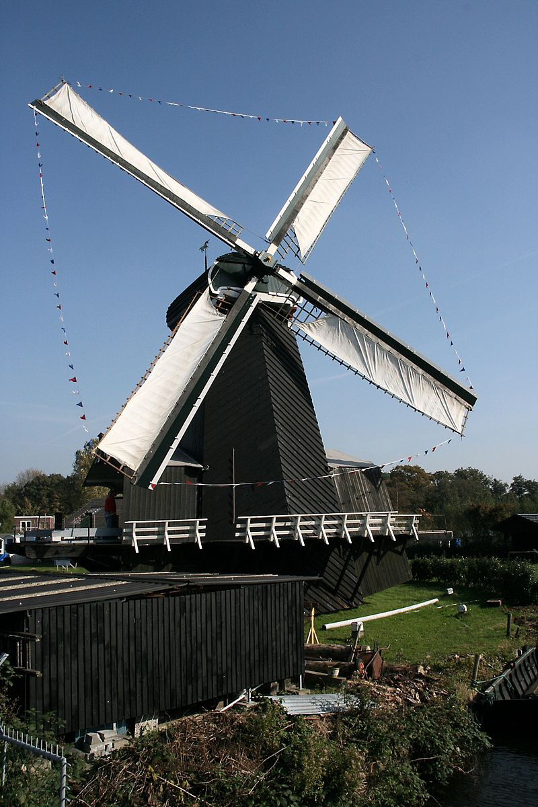
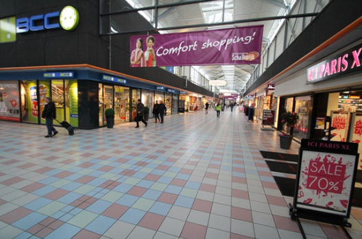

Europawijk is de wijk waar alle culturen samen komen, en zoals de naam zegt zijn de straten en lanen in europawijk vernoemd naar vele europese steden en landen. Denk aan de Antwerpenstraat, laan van parijs of de Engelandlaan. Europawijk is deel van het grotere Schalkwijk wat het grootste stadsdeel van haarlem is, en Haarlem is weer vervolgens de hoofdstad van de provincie Noord-Holland, dus dat maakt onze kleine wijk toch wel een belangrijk gebied. In de wijk is er veel groen, met name door het Engelandpark wat het grootste park is in Schalkwijk. Er zijn een aantal bezienswaardigheden in Europawijk, met name het rijksmonument "de eenhoorn" wat te vinden is aan het spaarne, waar De wijk aan grenst. Ook is er een groot winkelcentrum waar u heen kunt voor al uw shop gelegenheden! Kom het zien, de wijk waar u zich thuis kunt voelen.
 